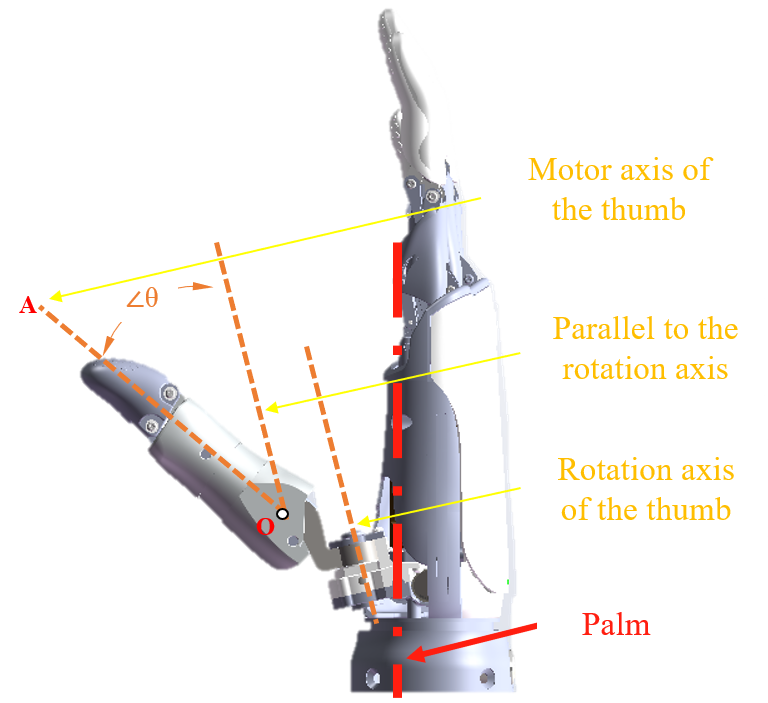

OHand Conmmunication Protocol V3.0

1. Communication Protocol Overview
The user control unit sends command data to control the state of the ROH dexterous hand. The upper system sends read instructions to the ROH dexterous hand, and the ROH dexterous hand receives the instruction data and returns the corresponding result to the upper system after the instruction data is successfully verified.
Note: The CAN protocol and serial protocol use the same command format. The CAN protocol uses CAN messages with 8 bytes per frame, and the CAN ID must match the dexterous hand ID.
2. Parameters of RS232、RS485 Communication
The communication parameters of RS232、RS485 are 115200bps、8 data bits、1 stop bit、no parity.
CAN: 1000000 bps (1 Mbps).
3. OHand Serial Command Frame Format
The instruction frame format for operating the ROH dexterous hand is as follows:
| Byte | Value | Description |
|---|---|---|
| byte[0] | 0x55 | Header |
| byte[1] | 0xAA | Header |
| byte[2] | HandID | ROH dexterous hand ID number |
| byte[3] | MasterID | Host ID number |
| byte[4] | Command | Operation command |
| byte[5] | DataLen | Length of the data part of the frame, that is, byte[6]..byte[6 + DataLen - 1] |
| byte[6]..byte[6 + DataLen - 1] | Data[0]..Data[DataLen-1] | Command data |
| byte[6 + DataLen] | Checksum | Check code(see in 4. LRC check code calculation method) |
The response frame of the ROH Dexterous Hand to a command is as follows:
| Byte | Value | Description |
|---|---|---|
| byte[0] | 0x55 | Header |
| byte[1] | 0xAA | Header |
| byte[3] | MasterID | Host ID number |
| byte[2] | HandID | ROH dexterous hand ID number |
| byte[4] | Command | Operation command. If the command execution fails, the highest bit is 1, the lower 7 bits are the operation command, and Data[0] is the error code (see Section 6: Dexterous Hand Error Codes). |
| byte[5] | DataLen | Length of the data part of the frame, that is, byte[6]..byte[6 + DataLen - 1] |
| byte[6]..byte[6 + DataLen - 1] | Data[0]..Data[DataLen-1] | Command data |
| byte[6 + DataLen] | Checksum | Check code(see in 4. LRC check code calculation method) |
Example:
Command Frame (HEX):
| Header | Dexterous hand ID | Host ID | Operation command | Length of the data | Command data | Check code |
|---|---|---|---|---|---|---|
| 55 AA | 02 | 01 | 50 | 12 | 10 27 FF 10 27 FF 10 27 FF 10 27 FF 10 27 FF 10 27 FF | 66 |
Correct Response Frame (HEX):
| Header | Dexterous hand ID | Host ID | Operation command | Length of the data | Command data | Check code |
|---|---|---|---|---|---|---|
| 55 AA | 01 | 02 | 50 | 00 | NULL | 53 |
Error Response Frame (HEX):
| Header | Dexterous hand ID | Host ID | Operation command | Length of the data | Command data | Check code |
|---|---|---|---|---|---|---|
| 55 AA | 01 | 02 | D0 | 01 | 01 | D3 |
Note: The operation command is the result of the command frame's operation code OR with 0x80, and the data field contains the error code.
4. Calculation Method of LRC Check Code
The XOR values of each byte in the instruction frame of the dexterous serial port from byte[2] to byte[6 + DataLen - 1]:
uint8_t buf[...];
uint8_t lrc = 0;
uint8_t cmd_data_len = 4/* sizeof(MasterID) + sizeof(HandID) + sizeof(Command) + sizeof(DataLen) */ + DataLen;
/* Fill buf */
buf[0] = 0x55;
buf[1] = 0xAA;
...
for (int i=0; i<cmd_data_len; i++)
lrc ^= buf[2 + i];
buf[2 + cmd_data_len] = lrc;
5. Commands
| Command Name | Command Value | Command Description | Command Data Bytes | Command Response Data |
|---|---|---|---|---|
| HAND_CMD_GET_PROTOCOL_VERSION | 0x00 | Get protocol version | [PROTOCOL_MINOR_VERSION, PROTOCOL_MAJOR_VERSION] | |
| HAND_CMD_GET_FW_VERSION | 0x01 | Get firmware version | [FW_REVISION_L, FW_REVISION_H, FW_MINOR_VERSION, FW_MAJOR_VERSION] | |
| HAND_CMD_GET_HW_VERSION | 0x02 | Get hardware version | [HW_TYPE, HW_VER, BOOT_VER_MAJOR, BOOT_VER_MINOR] | |
| HAND_CMD_GET_CALI_DATA | 0x03 | Get calibration data | [F0_RANGE_END_L, F0_RANGE_END_H, ..., Fn_RANGE_END_L, Fn_RANGE_END_H, F0_RANGE_START_L, F0_RANGE_START_H, ..., Fn_RANGE_START_L, Fn_RANGE_START_H, THUMB_ROOT_POS1_L, THUMB_ROOT_POS1_H, ..., THUMB_ROOT_POSn_L, THUMB_ROOT_POSn_H] | |
| HAND_CMD_GET_FINGER_PID | 0x04 | Get PID value of finger, PID values are all in float32 | [FINGER_ID] | [FINGER_ID, P_BYTE0, P_BYTE1, P_BYTE2, P_BYTE3, I_BYTE0, I_BYTE1, I_BYTE2, I_BYTE3, D_BYTE0, D_BYTE1, D_BYTE2, D_BYTE3, G_BYTE0, G_BYTE1, G_BYTE2, G_BYTE3] |
| HAND_CMD_GET_FINGER_CURRENT_LIMIT | 0x05 | Get current limit of finger in mA | [FINGER_ID] | [FINGER_ID, CURRENT_LIMIT_L, CURRENT_LIMIT_H] |
| HAND_CMD_GET_FINGER_CURRENT | 0x06 | Get current of finger in mA | [FINGER_ID] | [FINGER_ID, CURRENT_L, CURRENT_H] |
| HAND_CMD_GET_FINGER_FORCE_LIMIT | 0x07 | Get force limit of finger in mN | [FINGER_ID] | [FINGER_ID, FORCE_LIMIT_L, FORCE_LIMIT_H] |
| HAND_CMD_GET_FINGER_FORCE | 0x08 | Get current force of finger in mN | [FINGER_ID] | [FINGER_ID, FORCE_L, FORCE_H] |
| HAND_CMD_GET_FINGER_POS_LIMIT | 0x09 | Get absolute pos limit of finger | [FINGER_ID] | [FINGER_ID, POS_LIMIT_L, POS_LIMIT_H] |
| HAND_CMD_GET_FINGER_POS_ABS | 0x0A | Get current absolute position of finger | [FINGER_ID] | [FINGER_ID, ABS_TARGET_POS_L, ABS_TARGET_POS_H, ABSOLUTE_POS_L, ABSOLUTE_POS_H] |
| HAND_CMD_GET_FINGER_POS | 0x0B | Get current logical position of finger | [FINGER_ID] | [FINGER_ID, LOGICAL_TARGET_POS_L, LOGICAL_TARGET_POS_H, LOGICAL_POS_L, LOGICAL_POS_H] |
| HAND_CMD_GET_FINGER_ANGLE | 0x0C | Get first joint angle of finger, value = angle * 100 | [FINGER_ID] | [FINGER_ID, TARGET_ANGLE_L, TARGET_ANGLE_H, CURRENT_ANGLE_L, CURRENT_ANGLE_H] |
| HAND_CMD_GET_THUMB_ROOT_POS | 0x0D | Get preset position of thumb root, {0, 1, 2, 255}, 255 as unknown | [PRESET_POS] | |
| HAND_CMD_GET_FINGER_POS_ABS_ALL | 0x0E | Get current absolute positions of all fingers | [F0_TARGET_ABS_POS_L, F0_TARGET_ABS_POS_H, ..., Fn_TARGET_ABS_POS_L, Fn_TARGET_ABS_POS_H, F0_CURRENT_ABS_POS_L, F0_CURRENT_ABS_POS_H, ..., Fn_CURRENT_ABS_POS_L, Fn_CURRENT_ABS_POS_H] | |
| HAND_CMD_GET_FINGER_POS_ALL | 0x0F | Get current logical positions of all fingers | [F0_TARGET_LOGICAL_POS_L, F0_TARGET_LOGICAL_POS_H, ..., Fn_TARGET_LOGICAL_POS_L, Fn_TARGET_LOGICAL_POS_H, F0_CURRENT_LOGICAL_POS_L, F0_CURRENT_LOGICAL_POS_H, ..., Fn_CURRENT_LOGICAL_POS_L, Fn_CURRENT_LOGICAL_POS_H] | |
| HAND_CMD_GET_FINGER_ANGLE_ALL | 0x10 | Get first joint angles of all fingers, value = angle * 100 - NOT implemented yet | [F0_TARGET_ANGLE_L, F0_TARGET_ANGLE_H, ..., Fn_TARGET_ANGLE_L, Fn_TARGET_ANGLE_H, F0_CURRENT_ANGLE_L, F0_CURRENT_ANGLE_H, ..., Fn_CURRENT_ANGLE_L, Fn_CURRENT_ANGLE_H] | |
| HAND_CMD_GET_FINGER_STOP_PARAMS | 0x11 | Get stuck protection params: speed(logical ticks/s), current(mA), stall period(ms), retry period(ms) | [FINGER_ID] | [FINGER_ID, SPEED_L, SPEED_H, STOP_CURRENT_L, STOP_CURRENT_H, STOP_AFTER_PERIOD_L, STOP_AFTER_PERIOD_H, RETRY_INTERVAL_L, RETRY_INTERVAL_H] |
| HAND_CMD_GET_SELF_TEST_SWITCH | 0x20 | Get self-test on/off state, 0:OFF, 1:ON | [ON_OFF] | |
| HAND_CMD_GET_BEEP_SWITCH | 0x21 | Get beep on/off state, 0:OFF, 1:ON | [ON_OFF] | |
| HAND_CMD_GET_BUTTON_PRESSED_CNT | 0x22 | Get button pressed count, ignore for ROH please | [BTN_PRESSED_CNT] | |
| HAND_CMD_GET_UID | 0x23 | Get UID of hand | [UID0_BYTE0, UID0_BYTE1, UID0_BYTE2, UID0_BYTE3, UID1_BYTE0, UID1_BYTE1, UID1_BYTE2, UID1_BYTE3, UID2_BYTE0, UID2_BYTE1, UID2_BYTE2, UID2_BYTE3] | |
| HAND_CMD_GET_BATTERY_VOLTAGE | 0x24 | Get battery voltage in mV, ignore for ROH please | [BATTERY_VOLTAGE_L, BATTERY_VOLTAGE_H] | |
| HAND_CMD_GET_USAGE_STAT | 0x25 | Get usage stats, ignore for ROH please | [MOTOR_CNT] | [USE_TIME_BYTE0, USE_TIME_BYTE1, USE_TIME_BYTE2, USE_TIME_BYTE3, F0_OPEN_CNT_BYTE0, F0_OPEN_CNT_BYTE1, F0_OPEN_CNT_BYTE2, F0_OPEN_CNT_BYTE3, ..., Fn_OPEN_CNT_BYTE0, Fn_OPEN_CNT_BYTE1, Fn_OPEN_CNT_BYTE2, Fn_OPEN_CNT_BYTE3] |
| HAND_CMD_GET_MANUFACTURE_DATA | 0x3E | Get manufacture data | [BYTE0, ..., BYTEn] | |
| HAND_CMD_GET_VENDOR_ID | 0x3F | Get vendor ID | ['O', 'Y'] | |
| HAND_CMD_RESET | 0x40 | Reset, MODE=0: reset to working state; MODE=1: reset to DFU mode | [MODE] | |
| HAND_CMD_POWER_OFF | 0x41 | Power off, ignore for ROH please | ||
| HAND_CMD_SET_NODE_ID | 0x42 | Set hand node ID | [NODE_ID] | |
| HAND_CMD_CALIBRATE | 0x43 | Calibrate hand, for factory use only | [KEY_L, KEY_H] | |
| HAND_CMD_SET_CALI_DATA | 0x44 | Set calibration data | [MOTOR_CNT, F0_RANGE_END_L, F0_RANGE_END_H, ..., Fn_RANGE_END_L, Fn_RANGE_END_H, F0_RANGE_START_L, F0_RANGE_START_H, ..., Fn_RANGE_START_L, Fn_RANGE_START_H, THUMB_ROOT_POS_CNT, THUMB_ROOT_POS1_L, THUMB_ROOT_POS1_H, ..., THUMB_ROOT_POSn_L, THUMB_ROOT_POSn_H] | |
| HAND_CMD_SET_FINGER_PID | 0x45 | Set PID value for finger, PID values are all in float32 | [FINGER_ID, P_BYTE0, P_BYTE1, P_BYTE2, P_BYTE3, I_BYTE0, I_BYTE1, I_BYTE2, I_BYTE3, D_BYTE0, D_BYTE1, D_BYTE2, D_BYTE3, G_BYTE0, G_BYTE1, G_BYTE2, G_BYTE3] | |
| HAND_CMD_SET_FINGER_CURRENT_LIMIT | 0x46 | Set current limit for finger, [0, 65535] | [FINGER_ID, CURRENT_LIMIT_L, CURRENT_LIMIT_H] | |
| HAND_CMD_SET_FINGER_FORCE_LIMIT | 0x47 | Set force limit for finger, [0, 65535] | [FINGER_ID, FORCE_LIMIT_L, FORCE_LIMIT_H] | |
| HAND_CMD_SET_FINGER_POS_LIMIT | 0x48 | Set absolute pos limit for finger, [0, 65535] | [FINGER_ID, POS_LIMIT_L, POS_LIMIT_H] | |
| HAND_CMD_FINGER_START | 0x49 | Start finger | ||
| HAND_CMD_FINGER_STOP | 0x4A | Stop finger | ||
| HAND_CMD_SET_FINGER_POS_ABS | 0x4B | Move finger to physical position, [0, 65535] | [FINGER_ID, ABSOLUTE_POS_L, ABSOLUTE_POS_H, SPEED] | |
| HAND_CMD_SET_FINGER_POS | 0x4C | Move finger to logical position, [0, 65535] | [FINGER_ID, LOGICAL_POS_L, LOGICAL_POS_H, SPEED] | |
| HAND_CMD_SET_FINGER_ANGLE | 0x4D | Set angle of finger, [0, 65535], value = angle * 100 | [FINGER_ID, TARGET_ANGLE_L, TARGET_ANGLE_H, SPEED] | |
| HAND_CMD_SET_THUMB_ROOT_POS | 0x4E | Move thumb root to preset position, | [PRESET_POS] | |
| HAND_CMD_SET_FINGER_POS_ABS_ALL | 0x4F | Set absolute positions for all fingers | [F0_ABS_POS_L, F0_ABS_POS_H, F0_SPEED, ..., Fn_ABS_POS_L, Fn_ABS_POS_H, Fn_SPEED] | |
| HAND_CMD_SET_FINGER_POS_ALL | 0x50 | Set logical positions for all fingers | [F0_POS_L, F0_POS_H, F0_SPEED, ..., Fn_POS_L, Fn_POS_H, Fn_SPEED] | |
| HAND_CMD_SET_FINGER_ANGLE_ALL | 0x51 | Set first joint angles for all fingers, [0, 65535], value = angle * 100 | [F0_ANGLE_L, F0_ANGLE_H, F0_SPEED, ..., Fn_ANGLE_L, Fn_ANGLE_H, Fn_SPEED] | |
| HAND_CMD_SET_FINGER_STOP_PARAMS | 0x52 | Set stall protection params: speed(logical ticks/s), current(mA), stall period(ms), retry period(ms) | [FINGER_ID, SPEED_L, SPEED_H, STOP_CURRENT_L, STOP_CURRENT_H, STOP_AFTER_PERIOD_L, STOP_AFTER_PERIOD_H, RETRY_INTERVAL_L, RETRY_INTERVAL_H] | |
| HAND_CMD_SET_CUSTOM | 0x5F | Custom set command | [MOTOR_CNT, DATA_FLAG, ...] | [...] |
| HAND_CMD_SET_SELF_TEST_LEVEL | 0x60 | Set self-test level, 0: wait command, 1: semi self-test, 2: full self-test | [SELF_TEST_LEVEL] | |
| HAND_CMD_SET_BEEP_SWITCH | 0x61 | Set beep on/off state, 0:OFF, 1:ON | [ON_OFF] | |
| HAND_CMD_BEEP | 0x62 | Beep for a period in ms, [0, 65535] | [BEEP_PERIOD_L, BEEP_PERIOD_H] | |
| HAND_CMD_SET_BUTTON_PRESSED_CNT | 0x63 | Set button pressed count, for calibration only | [BTN_PRESSED_CNT] | |
| HAND_CMD_START_INIT | 0x64 | Start init in case of SELF_TEST_LEVEL=0 | ||
| HAND_CMD_SET_MANUFACTURE_DATA | 0x65 | Set menufacture data | ... |
Note:
- If not specified, single-byte data is uint8 type, XXX_L, XXX_H represent the low byte and high byte of uint16 type; XXX_BYTE0, XXX_BYTE1, XXX_BYTE2, XXX_BYTE3 represent the 4 bytes from low to high of uint32 type;
- If specified as float32 type, XXX_BYTE0, XXX_BYTE1, XXX_BYTE2, XXX_BYTE3 represent the 4 bytes from low to high of float32 type.
6. Dexterous Hand Error Codes
| Error Name | Code | Description | Group |
|---|---|---|---|
| ERR_PROTOCOL_WRONG_CRC | 0x01 | CRC error | Protocol |
| ERR_COMMAND_INVALID | 0x11 | Invalid command | Command |
| ERR_COMMAND_INVALID_BYTE_COUNT | 0x12 | Invalid byte count | Command |
| ERR_COMMAND_INVALID_DATA | 0x13 | Invalid data | Command |
| ERR_STATUS_INIT | 0x21 | Initializing | Status |
| ERR_STATUS_CALI | 0x22 | Waiting calibration | Status |
| ERR_STATUS_STUCK | 0x23 | Motor stuck | Status |
| ERR_OP_FAILED | 0x31 | Operation failed | Operation |
| ERR_SAVE_FAILED | 0x32 | Save failed | Operation |
7. Finger Angle
Description of angle definition and motion range:
| Angle | Legend | Angle range |
|---|---|---|
| Index finger Middle finger Ring finger Little finger |  |
100.22°~178.37° 97.81° ~ 176.06° 101.38° ~ 176.54° 98.84° ~ 174.86° |
| Thumb bending |  | 2.26° ~ 36.76° |
| Thumb rotation |  |
0° ~ 90° |